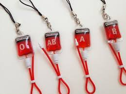
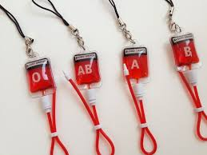

WHY SHOULD ONE DONATE BLOOD
1.Women with complications of pregnancy, such as ectopic pregnancies and haemorrhage before, during or after childbirth.
2.Children with severe anaemia often resulting from malaria or malnutrition.
3.People with severe trauma following man-made and natural disasters and many complex medical and surgical procedures and cancer patients.
4.It is also needed for regular transfusions for people with conditions such as thalassaemia and sickle cell disease and is used to make products such as clotting factors for people with haemophilia.
There is a constant need for regular blood supply because blood can be stored for only a limited time before use. Regular blood donations by a sufficient number of healthy people are needed to ensure that safe blood will be available whenever and wherever it is needed.

 



FEATURES OF THE WEBITE
-Blood Donation Camp & Camp Organiser Management.
- Donor Management - Donor Registration, Managing donor database, recording their physical and medical statistics.
- Inventory management in blood bank for storage and issuance of blood.
- Blood requisition and issuance of blood.
- Online transfer of blood from one blood bank to another.
- Discarding of expired and unsuitable blood (Less Qty., Reactive, Clotting, Hemolysis).
- Being a web based system, can be implemented throughout the state. - - Separate user accounts can be created
for each blood bank.
- Patient Register/Blood Sample Receiving Register, Donor Register, Blood Issue Register and Discarded Blood report.
- Fridge Wise Stock Position and Printing of Fridge Stickers.
- List of Donors who are eligible for donation on a particular date with contact Number.
- Camp Wise Donor List and Printing of Donor Cards.